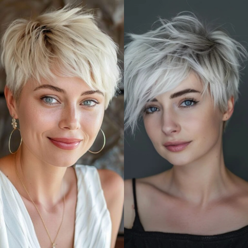
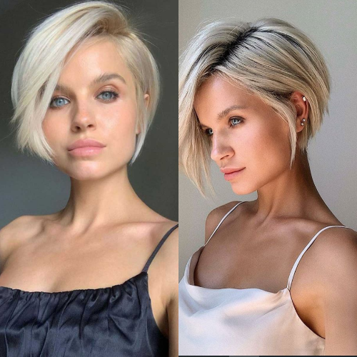
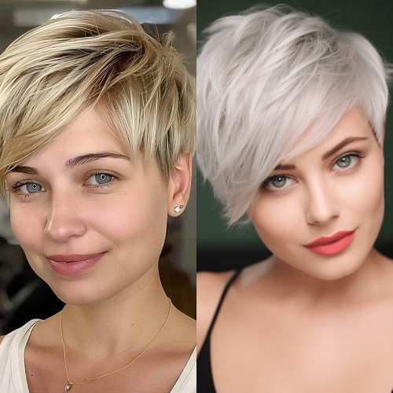
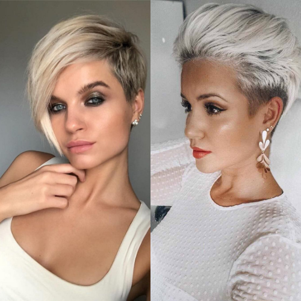

Short spiked hair is making a bold comeback in 2025, with fresh takes on edgy, textured styles for both men and women. This versatile hairstyle suits various face shapes and hair types, offering an effortless yet stylish look. Whether you prefer a messy, tousled spike or a sleek, structured finish, this guide covers the best short spiked hair trends and styling tips to help you achieve the perfect look.
The resurgence of short spiked hair can be attributed to its low-maintenance appeal and adaptability to modern fashion trends. Celebrities, influencers, and runway models have been seen sporting updated versions of this classic style, making it a go-to choice for those looking to add an edge to their appearance. Additionally, advancements in hair products and styling tools have made it easier than ever to create and maintain spiked hairstyles.
Textured Spikes with UndercutThis modern take on the classic spiky look features a short undercut with voluminous textured spikes on top. Perfect for those who want a bold yet clean-cut appearance.
Messy Spiked Pixie CutIdeal for women who love short hair, the messy spiked pixie cut adds volume and a playful, carefree vibe. Use a lightweight styling wax to enhance texture without making hair stiff.
Classic Short Spiky HairA timeless look that works for all genders, this style features uniform spikes that can be styled upwards or slightly tousled for a casual effect.
Faux Hawk SpikesFor a daring yet stylish twist, the faux hawk incorporates short spiked layers that gradually taper on the sides, creating a dynamic and youthful appeal.
Bleached or Colored SpikesAdding a pop of color, whether through highlights, pastels, or bold neon shades, can take short spiked hair to the next level, making it a true statement style.
Choose the Right Hair Products: Use a lightweight pomade, wax, or styling gel for definition without stiffness.
Blow-Dry for Volume: Apply a heat protectant and use a blow dryer to lift the roots for extra height and texture.
Experiment with Textures: Alternate between a sleek, glossy finish and a matte, tousled look depending on the occasion.
Use a Fine-Tooth Comb or Fingers: For precise spikes, use a comb; for a relaxed style, finger-comb the hair for a natural finish.
Finish with a Strong Hold Spray: Lock your spikes in place while keeping them flexible and touchable.
Short spiked hair works well for individuals with various face shapes, especially oval, square, and heart-shaped faces. It complements both thick and fine hair, though those with finer hair may need volumizing products to enhance the spiky effect. Additionally, this style suits all age groups, offering a youthful and energetic vibe.
Short spiked hair is a timeless yet modern hairstyle that continues to evolve with contemporary trends. Whether you prefer a rugged, edgy look or a polished, sophisticated finish, this style is adaptable and easy to maintain. Try experimenting with different spike lengths, textures, and colors to find the perfect variation for your personality and lifestyle.
Stay ahead of the trend—embrace the short spiked hair look in 2025 and make a bold style statement!
   